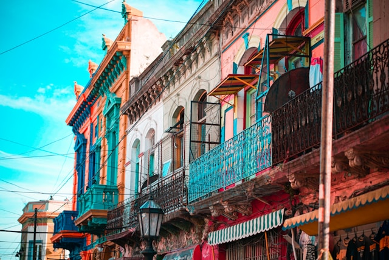

V samém srdci barcelonské čtvrti Eixample se tyčí jedna z nejikoničtějších staveb katalánské metropole — La Pedrera, známá také jako Casa Milà. Tato mimořádná budova, kterou navrhl slavný architekt Antoni Gaudí, je jedním z nejvýraznějších příkladů katalánského modernismu a zároveň posledním civilním projektem, na kterém Gaudí pracoval před tím, než se plně věnoval stavbě chrámu Sagrada Família.
Caminito: barevná ulice s duší Buenos Aires

Caminito je slavná pěší ulička a venkovní galerie pod širým nebem ve čtvrti La Boca v Buenos Aires. Je známá svými barevnými domy, tangem, ulicí plnou umění a bohatou historií dělnické čtvrti. Oblast byla původně obytnou čtvrtí pro přistěhovalce, zejména z Itálie. Domky byly postaveny z levných materiálů – často ze zbytků lodí – a natřené pestrými barvami, podle dostupných barev od námořníků. Ve 20. století místo upadalo, ale v 50. letech ho oživil argentinský malíř Benito Quinquela Martín, který ho přeměnil v uměleckou a kulturní oblast.